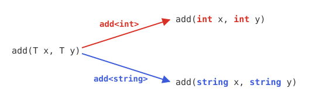
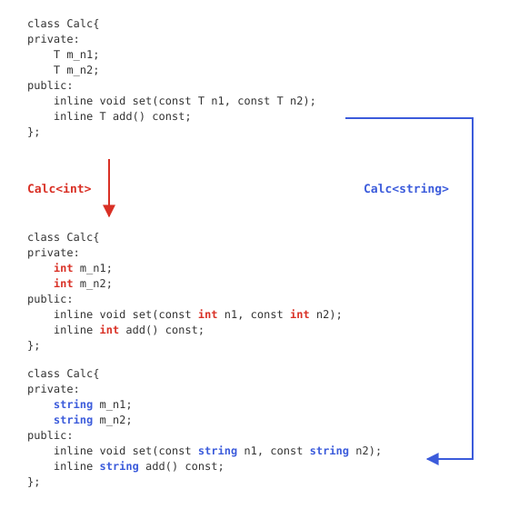
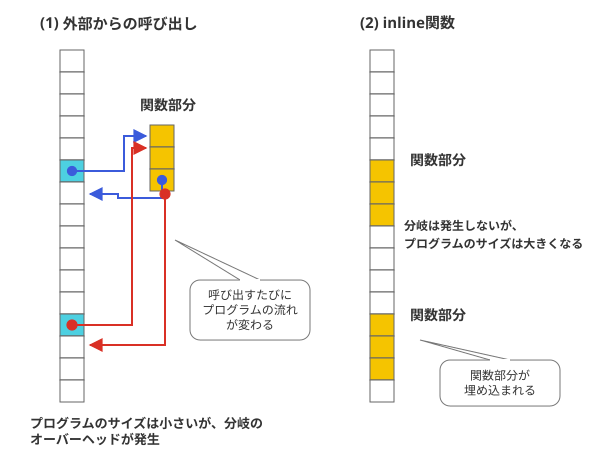

テンプレート
汎用性の高いプログラム
C++言語に限らず、オブジェクト指向言語でプログラミングをする際に意識されることが、処理になるべく汎用性を持たせるという点にあります。同じような処理を何度も作るのではなく、できるだけ少ない記述で多数のことをできるようにすることが求められます。そのようなコーディングを実現する手段はいくつかありますが、ここではそのうち、テンプレートと呼ばれる方法について説明していきます。
型の違い
今まで学習してきたC++言語は、変数やクラスの型などは厳密に定義をする必要がありました。わかりやすい例をあげると、演算子の"+"を考えてみましょう。この演算子は、数値でも利用できますし、また、stringクラスのようなクラスでも使われます。例えば、数値の場合は、
となり、数値の和を表す演算になります。これに対し、stringクラスの場合は、
といったように、意味が違います。そのため、例えば＋演算子を使って数値の和を求める関数と、文字列をつなげる関数を使う場合には、別の関数を用意しなくてはなりません。つまり、これら演算子は違うものとして扱うわけです。このように、今までのプログラミングにおいては、同じ演算子でも、データ形式に依存するということがわかります。
ジェネリックプログラミングとテンプレート
これに対し、「同じ演算子であれば、型が違っても使えるべきである」という考え方もあります。前述のような関数のたとえで言うのであれば、演算子が同じであれば、型が何であっても使えるようにする、という考え方です。このような考え方をジェネリックプログラミングと言います。
そして、C++言語でジェネリックプログラミングを実現するための仕組みを、テンプレートと言います。テンプレートには、大きく分けて二つあり、関数に用いるテンプレート関数とクラスに用いるテンプレートクラスがあります。ここでは、それらを解説していきます。
テンプレート関数
サンプルプログラム
まずは、関数テンプレートの例をみてみましょう。以下のプログラムを実行してみてください。
#include <iostream>
#include <string>
using namespace std;
// テンプレート関数
template <typename T>
T add(T x, T y){
return x + y;
}
int main(){
cout << add<int>(4, 3) << endl; // 数値でadd関数を利用
cout << add<string>("ABC", "DEF") << endl; // stringでaddを利用
cout << add(1, 2) << endl; // 両方ともintの場合、型指定省略可能
// cout << add("abc", "def") << endl; // stringの場合、型指定が必要
// cout << add(1,2.3) << endl; // 型が不一致した場合、使えない。
return 0;
}
ABCDEF
3
addという関数が使われていますが、呼び出すときに、関数名のあとに、<int>とすれば、整数の加算関数として、<string>をつければ、文字列の結合の演算子として利用できます。
関数テンプレートの定義
このプログラムで出てくる、
の部分で、テンプレートを定義しています。これにより、これに続く関数が、テンプレート関数であることを示しています。Tという文字が変数の型を表すテンプレート引数で、次の行からの関数定義部分の Tを int や stringといったデータ型およびクラスに対応させて、変数型の異なる関数をまとめて定義しているのです。続いて、このTを引数、もしくは戻り値の型とする関数を定義します。
return x + y;
}
Tの部分には、さまざまな型が入ります。intといった基本データ型、もしくはクラス名がここに入ります。
関数テンプレートの利用
では、このように定義された関数テンプレートは、どのように利用されるのでしょうか？サンプルの、13行目～15行目を見てください。13行目の場合は引数として、intを、14行目では、stringを引数として利用しています。
add<string>("ABC", "DEF");
このように、<と>でデータ型、もしくはクラス名を囲めば、テンプレートのTにあたる部分がこの型、もしくはクラスとなって、その関数を利用できるわけです（図3-1.参照）。したがって、型、およびクラスごとに同じ処理をする関数を多数定義する必要はありません。

図3-1：テンプレート関数のイメージ
また、15行目のように、引数の型がはっきりしていれば、<と>を省略することができます。
どちらも明らかにint型であり、このようにはっきりした場合は、省略可能です。ただし、次のようなケースは例外です。
add(1,2.3) ← 両方の型が異なる。
16行目および、17行目のコメントを外してみてください。ビルドエラーが発生します。理由は、16行目のケースは、一見両方ともstringを使っているのでよさそうな感じがしますが、実は、このような形で表れるのは、char*である可能性もあることから、型指定があいまいになり、エラーになります。
さらに、17行目のケースでは、第一の引数がintであるのに対し、第二の引数が小数であることから、doubleとなり、ひとつのテンプレートに異なるデータ型を指定していることから、エラーになります。以上のことから、テンプレートを用いる際には、必ず型・およびクラスを明確に指定してから使用することが推奨されます。
テンプレートクラス
サンプルプログラム
関数に続き、今度はクラスにテンプレートが適用された場合のサンプルを見てみましょう。まずは、以下のサンプルを実行してみてください。
#ifndef CALC_H
#define CALC_H
template<typename T> class Calc{
private:
T m_n1;
T m_n2;
public:
inline void set(const T n1, const T n2)
{ m_n1 = n1; m_n2 = n2; }; // 引数のセット
inline T add() const{
return m_n1 + m_n2;
} // 計算結果
};
#endif // CALC_H
#include <iostream>
#include <string>
#include "calc.h"
using namespace std;
int main(){
Calc<int> i1;
Calc<string> i2;
i1.set(1, 2);
i2.set("ABC", "DEF");
cout << i1.add() << endl << i2.add() << endl;
return 0;
}
ABCDEF
ヘッダファイルへの実装
プログラムの解説に入る前に、このソースコードには注意すべき点がありますので、まずはその点について説明していきましょう。テンプレートクラスのプログラムを見ると、先頭にテンプレートの宣言が来るのは、関数の場合と同じです。ただ、見てわかるとおり、このサンプルには、calc.hに対応する.cppファイルがありません。実は、テンプレートクラスでは、実装はヘッダファイルにすることが推奨されているからなのです。理由については、難しくなるのでここでは省略しますが、テンプレートを用いたクラスを記述するときは、このほうが効率的です。
テンプレートクラスの実装
では、以上を踏まえ、calc.hの中身を見てみましょう。このプログラムを見ると、calc.hの4行目で
としています。これは、これから、テンプレートTをこのプログラムの中で利用するということを宣言しています。したがって、以下、Tという文字が出てくると、その部分を、任意のデータ型・クラスに変更できるということを意味しているのは、テンプレート関数の場合と変わりません。続いてmain.cppの8行目、9行目を見てみましょう。
Calc<string> i2;
これにより、i1は、Tの部分が、intに、i2は、Tの部分がstringとして扱うことができるようになります。この点は、関数の場合とまったく同じです（図3-2.参照）。

図3-2：テンプレートクラスのイメージ
以上で、listex3-2のプログラムの処理自体の説明は終わりですが、最後に、inline(インライン)関数について説明しておくことにします。
inline関数
inline修飾子
calc.hの9行目、および11行目に、inlineという修飾子がついています。先頭にこの修飾子がつくと、その関数はコンパイル時にインライン展開されることになる、という宣言です。では、インライン展開とはなんでしょう？
inline宣言されていない普通の関数は、コンパイルされたアセンブラの中で、プログラムの流れの中と別の部分に記述され、必要な時だけ呼び出されます。しかし、inline関数を用いると、この部分が処理の部分に直接埋め込まれるため、処理呼び出しなどのオーバーヘッドが少なくなり、処理速度が向上するというメリットがあります(図3-3.参照)。

図3-3：inline関数のイメージ
inline関数のメリットとデメリット
このように、インライン関数は、C言語で言うマクロのような役割があることがわかります。ただ、inline関数も万能というわけではありません。頻繁に使われるうえに、関数の処理が長い場合には、ビルドされて生成されたソースコードが大きくなりすぎるなどのデメリットがあります。また、inlineの処理は、コンパイラに依存する部分が多く、どのようなコードに使用しても必ず効果があるというわけではありません。
なお、inline関数は、テンプレートの場合と同様、通常はヘッダーファイル内に処理を記述するのが普通です。inline関数を宣言する場合には、必ずヘッダーファイルに記述するようにしましょう。
inlineを用いるのが好ましい場合
では、どのような場合が、このinlineを用いるのに最も好ましいのでしょうか？それは、このサンプルのような、セッター・ゲッターのようなケースです。こういった処理は、オーバーヘッドが少ない上に、頻繁に使用されることから、一般に、constなどと併せて用いると、C++のプログラムのパフォーマンスを向上させると言われています。
テンプレートのまとめ
複数のテンプレート
ここでのサンプルでは、テンプレートの種類は、一種類でしたが、場合によっては複数扱わなくてはならないケースも出てきます。その場合は、以下のように記述します。
この例では、二種類のデータ型・およびクラスを利用できます。,で区切れば、さらに多くの型を宣言することも可能です。これを利用する場合も、
のように利用します。
利用する上での注意点
このように便利なテンプレートですが、利用する上では注意が必要です。まず、テンプレートを利用すると、以下のようなデメリットも存在します。
テンプレートを用いるデメリット
- 実行しないと不明な事項が多い
- 生成されるコードが大きくなる
このため、便利だからといってむやみにテンプレートを使うことはおすすめできません。使用する場合、C言語のマクロなどの場合と同様、必要最低限にしましょう。
STL
STLとは
では、テンプレートを使う最大のメリットはなんでしょうか？実は、テンプレートがあることの最大のメリットは、今から説明する、STL(Standard Template Library)が使えるということにあるのです。
STLは、その名の通り、テンプレートを用いた標準的なC++のライブラリであり、プログラミングの上で必要な様々なデータ形式を、複雑な記述なしにだれでも簡単に利用できるようにしたものです。
STLのデータ構造
では、STLのデータ構造にはどのようなものがあるのでしょうか？代表的なものをピックアップして、以下の表にまとめてみます。
| 名前 | 読み方 | 役割 |
|---|---|---|
| vector | ベクター／ベクトル | 動的配列 |
| list | リスト | 双方向リスト |
| map | マップ | 連想配列 |
| set | セット | 集合 |
| stack | スタック | スタック |
| queue | キュー | キュー |
次回から、2回に分けてこれらSTLの代表的なデータ構造と、その利用方法について説明していきます。